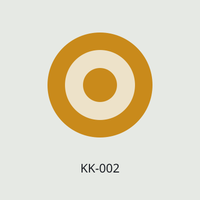
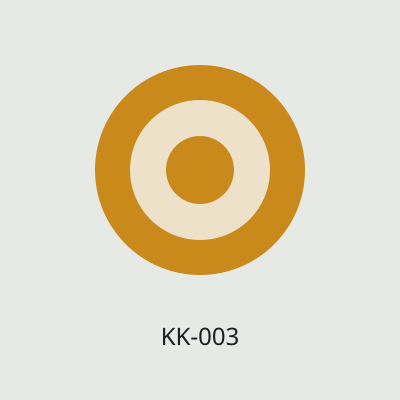
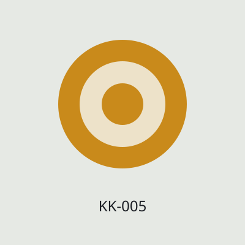
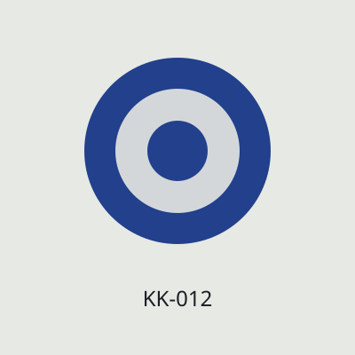
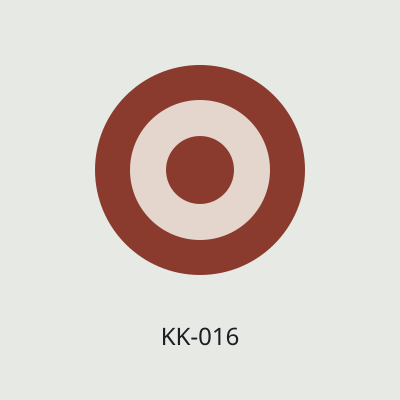
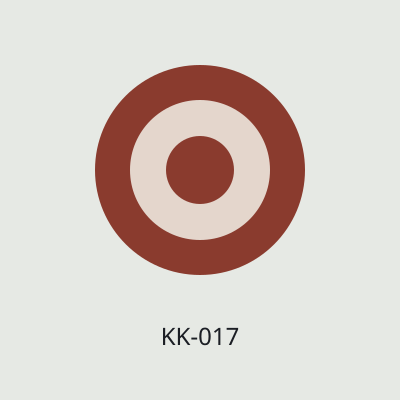
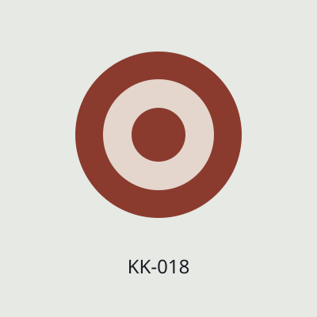
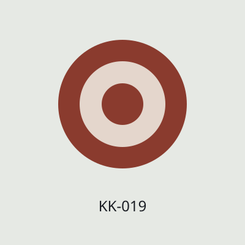
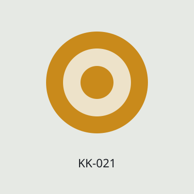

Мед, чай і тепло з гір
20 товарів від невеликих карпатських виробників
-
 Мед акацієвий 500 гВ наявності: 19 шт.298 грн
Мед акацієвий 500 гВ наявності: 19 шт.298 грн -

Мед гірський 1 кгВ наявності: 3 шт.540 грн480 грн -

Мед гречаний 500 гВ наявності: 8 шт.290 грн -
 Медовуха класична 0,7 лВ наявності: 9 шт.340 грн
Медовуха класична 0,7 лВ наявності: 9 шт.340 грн -

Горіхи в меді 250 гНемає в наявності210 грн -
 Чай карпатський збір 50 гВ наявності: 40 шт.150 грн
Чай карпатський збір 50 гВ наявності: 40 шт.150 грн -
 Іван-чай ферментований 50 гВ наявності: 18 шт.170 грн
Іван-чай ферментований 50 гВ наявності: 18 шт.170 грн -
 Чебрець сушений 30 гВ наявності: 55 шт.143 грн
Чебрець сушений 30 гВ наявності: 55 шт.143 грн -
 Чай чорничний 50 гВ наявності: 7 шт.
Чай чорничний 50 гВ наявності: 7 шт.210 грн185 грн -
 Збір для імунітету 100 гВ наявності220 грн
Збір для імунітету 100 гВ наявності220 грн - Шкарпетки вовняні гуцульськіВ наявності: 15 шт.320 грн
-

Ліжник ручної роботи 70×140В наявності: 3 шт.2 400 грн - Рушник льняний з вишивкоюВ наявності: 6 шт.780 грн
- Хустка вовнянаНемає в наявності650 грн
-
 Сумка-торба з гобеленуВ наявності: 11 шт.540 грн
Сумка-торба з гобеленуВ наявності: 11 шт.540 грн -

Топірець сувенірний дерев'янийВ наявності: 20 шт.190 грн -

Свічка з бджолиного воскуВ наявності: 60 шт.120 грн -

Дзвіночок керамікаВ наявності: 25 шт.140 грн -

Скринька різьбленаВ наявності: 4 шт.890 грн -

Мед липовий 500 гВ наявності: 14 шт.275 грн